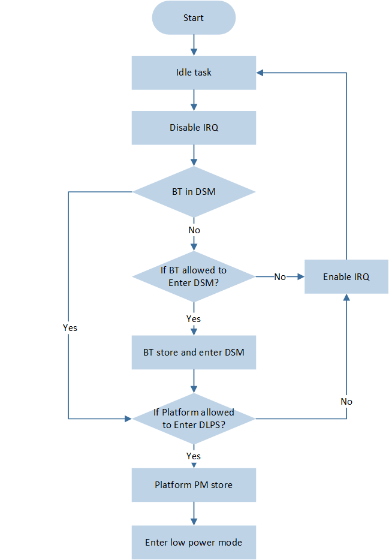

低功耗模式
低功耗模式下，系统会将不使用的设备置于低功耗状态。在此状态下，设备消耗的电量较少，并且可以在需要时快速唤醒并恢复全部功能。大多数组件（如 Clock、CPU、Peripherals 和 RAM）都可以关闭电源以降低系统功耗。
本文包含如下章节：功耗模式简介、电源管理、应用添加低功耗模式、异常分析 以及 DLPS Mode APIs。
功耗模式简介
本章将分 平台模块低功耗模式 和 蓝牙 MAC 模块低功耗模式 两部分进行介绍。平台模块会根据所处的功耗模式，将 CPU，外设和 RAM 等组件分别进入到不同的耗电状态。蓝牙 MAC 模块控制蓝牙模块的工作模式，且依赖平台模块进行正常运行。
平台模块低功耗模式
平台模块支持以下三种功耗模式。
- Active —— 系统 Active 模式在 Power active 的模式下，如果程序没有进入到 idle task，CPU 处于 Active 状态，CPU Clock 会处于高速状态，默认是 40M Clock。如果程序进入 idle task，CPU 进入 sleep 状态，此时 CPU clock 会自动降速。CPU sleep 时 clock 降低至 625KHz。
- DLPS —— 系统休眠模式较低的功耗，以及较快的进出时间，同时 RAM 内容保持。
- Power Down —— 极致低功耗模式此模式下 RAM 内容不保持，从 Power Down 模式退出执行重启流程，较 DLPS 模式耗时更长。只有 LPC 和 PAD（关闭 debounce）可以唤醒 Power Down。
不同功耗模式下各个模块使用情况 如下，此文档将详细介绍 DLPS 模式。
Mode |
PAD |
RAM |
32K clock |
RTC |
Peripheral |
CPU |
CPU Clock |
|---|---|---|---|---|---|---|---|
Active |
√ |
√ |
√ |
√ |
√ |
√ |
√ |
DLPS |
√ |
√ |
√ |
√ |
× |
× |
-- |
Power Down |
√ |
× |
× |
× |
× |
× |
-- |
特性与限制
系统可以快速进出 DLPS 模式。
进入 DLPS 的时间小于 1ms。
蓝牙唤醒事件：退出 DLPS 的时间大约 4ms。
平台唤醒事件：退出 DLPS 的时间大约 3ms。
CPU 断电会导致 SWD 断开连接，因此在使用 JLink 进行在线 debug 时，需要禁用 DLPS 模式。
只有蓝牙 MAC 处于 DSM 下，平台才可以进入 DLPS 或者 Power Down 模式。
蓝牙 MAC 模块低功耗模式
蓝牙 MAC 模块支持以下两种功耗模式。
- Active Mode —— 蓝牙 MAC Active在蓝牙 MAC Active 的模式下，蓝牙 MAC 可以正常工作，相关寄存器可以正常访问。
- DSM —— 蓝牙 MAC Sleep在蓝牙 MAC Sleep 的模式下，蓝牙 MAC 处于低功耗模式下，相关寄存器不可以访问。
特性与限制
仅在平台模块处于 Active mode 下，支持蓝牙 MAC 模块进入和退出 DSM。
电源管理
大多数情况下，系统处于空闲状态，只需保留必要的数据以进行系统恢复。时钟、CPU、外设和 RAM 等组件可以关闭电源，以降低系统功耗。当有任何事件需要处理时，系统将退出低功耗模式。时钟、CPU、蓝牙、外设和 RAM 将重新上电并恢复到进入 DLPS 之前的状态，然后响应唤醒事件。不同的系统级别存在不同的电源管理器单元，各自实现检查/存储/进入/退出/恢复功能。本节详细介绍了电源管理。
进入低功耗模式
本节内容介绍进入低功耗模式的流程以及条件。
低功耗模式进入流程
低功耗模式进入流程 及具体说明如下。

低功耗模式进入流程
系统进入到 idle task，关闭中断。
如果蓝牙模块已经处于 DSM，则直接跳转到 4。否则询问蓝牙模块是否允许进入 DSM。
如果蓝牙模块允许进入 DSM，保存蓝牙模块状态后进入 DSM 模式。否则打开中断，回到 idle task。
询问平台模块是否允许进入低功耗模式。
如果平台模块允许进入低功耗模式，保存平台模块状态后进入低功耗模式。否则打开中断，回到 idle task。
低功耗模式进入条件
电源管理会检查不同模块的状态，以选择进入相应的功耗模式，确保系统可以正常运行。
系统进入 DLPS 模式的条件
只有当同时满足以下条件时，系统才会进入 DLPS 模式。
系统执行在 idle task，其余 task 均处在 block 状态或 suspend 状态，且没有中断发生。
蓝牙 MAC 模块允许进入 DSM。
Non-Link mode （当没有连接时，BT 存在以下三种状态）
状态
说明
Standby State
系统不会收发数据，蓝牙会进入 DSM，且不会从 DSM 唤醒。
Advertising State
(connectable/un-connectable)
若 Adv_Interval * 0.625ms >= 15ms，允许进入 DSM，否则不允许进入。
若 Advertising Type 为 Direct Advertising (High duty cycle)，不允许进入 DSM。
对于多广播，依然要满足条件 Adv_Interval * 0.625ms >= 15ms 后才能进入 DSM。
Scanning State
若 (Scan Interval-Scan Window) * 0.625ms >= 15ms，允许进入 DSM，否则不允许进入。
Link mode （有以下两种角色）
角色
说明
Master Role
若 Connection Interval * 1.25ms >= 15ms，允许进入 DSM。
Slave Role
若 Connection Interval * ( 1 + Slave Latency ) * 1.25ms >= 15ms，允许进入 DSM。
备注
设备同时广播和连接的条件下，只有当前时间到下次广播或者连接事件的间隔大于或者等于 15ms，才允许进入 DSM。
平台模块
Peripheral，APP 注册的 check callback 执行后均返回 PASS。
OS 中的 SW timer 周期或者 task delay 时间大于或者等于 20ms。
备注
如果蓝牙模块允许进入 DSM，但平台模块不允许进入 DLPS，则蓝牙模块进入 DSM，而平台模块保持 active 状态。
如果蓝牙模块不允许进入 DSM，则整个系统将仍然处于 active 状态。
系统进入 Power Down 模式的条件
以上进入 DLPS 的条件均已满足。
不存在任何 active 状态下的 SW Timer 和 task delay。
退出低功耗模式
本节内容介绍退出低功耗模式的流程以及条件。
低功耗模式退出流程
低功耗模式退出流程 及具体说明如下。

低功耗模式退出流程
- Reset Handler系统退出低功耗模式后，会触发 Reset 异常进入 Reset Handler。在 Reset Handler 中会检查重启的原因。如果是上电启动或者 Power Down 唤醒，系统会走重启流程。如果从 DLPS 模式唤醒，系统会走 DLPS 恢复流程。
- 平台完全退出 DLPS系统从 DLPS 模式醒来后，CPU 会恢复 power 和高速 clock，Flash 和 RAM 开始上电。Platform 恢复的最后阶段是在 timer task 中完成的，此时 Platform 完全退出 DLPS，会完成 CPU NVIC，peripherals 的恢复及用户自定义退出 callback 函数的执行。
- 检查蓝牙模块判断是否蓝牙事件唤醒。如果是，蓝牙模块退出 DSM 并恢复状态；否则蓝牙模块继续保持低功耗状态。
低功耗模式退出条件
下列唤醒事件发生后，系统会从低功耗模式中退出。需要保证相关事件在低功耗模式进入前，有成功配置。
Mode |
|||||
|---|---|---|---|---|---|
DLPS |
√ |
√ |
√ |
√ |
√ |
Power Down |
√ |
√ |
× |
× |
× |
应用添加低功耗模式
电源管理是一种模块化且可扩展的架构。用户可以将 callback 函数注册到检查、存储、进入、退出和恢复等阶段，以便在应用程序启动时进行统一管理。用户只需根据自己想要使用的应用场景来选择所需的低功耗模式以及进行相应配置。
低功耗模式选择
用户可以通过以下函数来设置和获取低功耗模式，具体如下：
平台模块的低功耗模式：
power_mode_set()和power_mode_get()蓝牙模块的低功耗模式：
bt_power_mode_set()和bt_power_mode_get()
示例：将蓝牙模块配置为 DSM，将平台模块配置为 DLPS 。
void pwr_mgr_init(void)
{
bt_power_mode_set(BTPOWER_DEEP_SLEEP);
power_mode_set(POWER_DLPS_MODE);
}
注册 Callback 函数
对于蓝牙 MAC DSM，callback 函数的注册以及处理出现在 ROM 里面。用户只能注册 callback 函数到平台模块。每个 APP project 会有一个独立的 board.h 文件，用户可以定制平台保存和恢复的具体模块，具体如下：
用户可以使用
power_check_cb_register()将 callback 函数注册到电源管理的检查阶段，决定是否允许平台模块进入低功耗模式。用户可以使用
DLPS_IORegUserDlpsEnterCb()和DLPS_IORegUserDlpsExitCb()将函数注册到进入和退出阶段的用户 callback 函数里面。需要在
board.h中将USE_USER_DEFINE_DLPS_EXIT_CB与USE_USER_DEFINE_DLPS_ENTER_CB配置为 1。/* if use user define DLPS enter/DLPS exit callback function */ #define USE_USER_DEFINE_DLPS_EXIT_CB 1 #define USE_USER_DEFINE_DLPS_ENTER_CB 1
IO Store 和 Restore 函数：
如果 APP 中使用了某个外设，且需要在进出 DLPS 时，系统能自动保存、恢复其状态，则需要在
board.h中，将该外设对应的USE_XXX_DLPS宏设定为 ‘1’。对于部分外设比如 GDMA，需要在 DLPS exit callback function 里重新调用 init 函数。/* if use any peripherals below, #define it 1 */ #define USE_ADC_DLPS 0 #define USE_GPIOA_DLPS 0 #define USE_I2C0_DLPS 0 #define USE_I2C1_DLPS 0 #define USE_IR_DLPS 0 #define USE_KEYSCAN_DLPS 0 #define USE_SPI0_DLPS 0 #define USE_SPI1_DLPS 0 #define USE_UART0_DLPS 0 #define USE_UART1_DLPS 0 #define USE_ENHTIM_DLPS 0
系统会使用
power_stage_cb_register()统一将 IO Store 函数和 user-enter callback 函数注册到电源管理的进入阶段，也会统一将 IO Restore 函数和 user-exit callback 函数注册到电源管理的退出阶段。该步骤由系统在
DLPS_IORegister()中自动执行，无需手动注册。DLPS 进入阶段：依次执行 NVIC，PINMUX，user-enter，peripherals 保存。
DLPS 退出阶段：依次执行 PINMUX，peripherals，user-exit，NVIC 恢复。
void DLPS_IO_EnterDlpsCb(void) { // NVIC Store CPU_DLPS_Enter(); // PINMUX Store Pinmux_DLPS_Enter(); #if USE_USER_DEFINE_DLPS_ENTER_CB if (User_IO_EnterDlpsCB) { User_IO_EnterDlpsCB(); } #endif #if USE_ADC_DLPS ADC_DLPSEnter(ADC, (void *)&ADC_StoreReg); #endif // Other IO module } void DLPS_IO_ExitDlpsCb(void) { // PINMUX Restore Pinmux_DLPS_Exit(); #if USE_ADC_DLPS ADC_DLPSExit(ADC, (void *)&ADC_StoreReg); #endif // Other IO module #if USE_USER_DEFINE_DLPS_EXIT_CB if (User_IO_ExitDlpsCB) { User_IO_ExitDlpsCB(); } #endif // NVIC Restore CPU_DLPS_Exit(); } void DLPS_IORegister(void) { power_stage_cb_register(DLPS_IO_EnterDlpsCb, POWER_STAGE_STORE); power_stage_cb_register(DLPS_IO_ExitDlpsCb, POWER_STAGE_RESTORE); return; }
示例：将蓝牙模块配置为 DSM，将平台模块配置为 DLPS。
POWER_CheckResult DLPS_Check(void) { return POWER_CHECK_PASS; } void EnterDlpsSet(void) { } void ExitDlpsInit(void) { } void pwr_mgr_init(void) { power_check_cb_register(DLPS_Check); DLPS_IORegUserDlpsEnterCb(EnterDlpsSet); DLPS_IORegUserDlpsExitCb(ExitDlpsInit); DLPS_IORegister(); bt_power_mode_set(BTPOWER_DEEP_SLEEP); power_mode_set(POWER_DLPS_MODE); }
唤醒事件配置
PAD 唤醒事件
PINMUX 在 DLPS 下会断电，因此需要在进入 DLPS 前，将 PAD 从 PINMUX 模式切换到 AON 模式。进入DLPS前，首先需要配置 PAD 以避免漏电，其次需要配置 DLPS 的唤醒 Pin，以确保可以唤醒系统。
PAD (AON) 配置
PAD 在 DLPS 模式下不会掉电，因此不需要保存其状态。但是为了防止漏电，在进入 DLPS 时需要对 PAD 做如下设置。
系统没有使用到的 PAD，包括 package 没有出引脚的 PAD 必须设为：SW mode，Power on mode，Pull Down，Input mode
这些是 PAD 的默认设置，因此用户无须更改。
系统使用到的 PAD 设定取决于外围电路的电压。
电压是 VDD，需要把 PAD 设为：SW mode，Power on mode，Pull Up，Input mode
电压是 GND，需要把 PAD 设为：SW mode，Power on mode，Pull Down，Input mode
电压介于 VDD 和 GND 之间，需要把 PAD 设为： SW mode，Shut down mode，Pull None，Input mode
设置了唤醒功能的 PAD 需要设定为： SW mode，Power on mode，Pull Up/Pull Down，Input mode
不可以配置成 Shut down mode 和 Output mode，Pull Up/Pull Down 需要根据外围电路配置。
退出 DLPS 时要把 PAD 设置恢复成原来的状态，确保 PAD 实现应用所需的功能，以避免产生问题。
唤醒 Pin 配置
PAD 具有 DLPS 唤醒功能，可以调用
System_WakeUpPinEnable()使能某个 Pin 的唤醒功能。当该 Pin 的电平与唤醒电平相同时，会将系统从 DLPS 状态唤醒。希望 P3_2 为高电平时唤醒系统，且不打开 debounce，可做如下配置：
System_WakeUpPinEnable(P3_2, PAD_WAKEUP_POL_HIGH, PAD_WAKEUP_DEB_DISABLE);
希望 P3_2 为高电平时唤醒系统，打开 8ms 的 debounce，可做如下配置：
System_WakeUpDebounceTime(P3_2, 8); System_WakeUpPinEnable(P3_2, PAD_WAKEUP_POL_HIGH, PAD_WAKEUP_DEB_ENABLE);
System irq 是一个系统中断，其触发条件是
System_WakeUpPinEnable()使能 PAD 唤醒，且当前 pin 脚的电平状态与唤醒电平一致。系统默认在进入 DLPS 后关闭 system 中断，退出 DLPS 后恢复 system 中断。因此如果是 PAD 唤醒 DLPS，系统会在 system 中断恢复后，进入 system 中断的 handler。当 debounce 唤醒被关闭时，系统从 DLPS 醒来后，会触发 system 中断，用户可以在 system 中断 handler 里面调用
System_WakeUpInterruptValue()来查询是哪个 Pin 唤醒了系统。之后需要调用Pad_ClearWakeupINTPendingBit()来清除该 Pin 的唤醒状态。当 debounce 唤醒被打开时，系统从 DLPS 醒来后，会触发 system 中断。但是用户无法确定是哪个 Pin 唤醒的 DLPS，只能在 System 中断 handler 里面调用
System_WakeupDebounceStatus()获取 debounce 唤醒状态，之后调用System_WakeupDebounceClear()清除掉 debounce 唤醒状态。Debounce 唤醒开启后，只有 pin 维持在唤醒电平状态的时间超过 debounce time，才会唤醒 DLPS，可以防止意外唤醒。但是缺点是开启 debounce 唤醒后，无法检测具体是哪个 pin 在唤醒 DLPS。
LPC 唤醒事件
Demo 工程：
sdk\samples\lowpower\dlps\proj\rtl87x2g\mdk工程配置：设置
CONFIG_LPC_DLPS_EN为 1。LPC 唤醒需要调用以下接口。
LPC_WKCmd(ENABLE);
RTC 唤醒事件
HW 唤醒
Demo 工程：
sdk\samples\lowpower\dlps\proj\rtl87x2g\mdk工程配置：设置
CONFIG_RTC_DLPS_EN为 1。HW 唤醒需要额外调用以下接口：
RTC_WKConfig(RTC_COMP_WK_INDEX, ENABLE) // enable Comparator wake up RTC_SystemWakeupConfig(ENABLE);
SW 唤醒
RTC HW 唤醒 DLPS，需要 RTC 到期后，系统从 DLPS 退出，执行上电后 restore 动作，最后再触发 RTC 中断。这样导致 RTC 中断产生的时间被延迟了，延迟的时间即 DLPS 退出的时间。
如果需要更高精度的 RTC 中断，可以采用 SW 唤醒 DLPS，退出 DLPS 后，RTC 到期执行中断。因为 SW 唤醒 DLPS，会考虑到 DLPS 退出的延迟而提前唤醒 DLPS，因此 RTC 中断会更为准确。
具体做法如下。
取消调用 RTC 唤醒使能的接口，来关闭 RTC 中断 HW 唤醒。
在 callback 中增加
next_wake_up_time指针参数，计算出下次唤醒的时间（单位32.15us），将计算得到的值更新到next_wake_up_time中，由 platform 触发下次唤醒。uint32_t RTC_tick; // unit: 32.15us POWER_CheckResult RTC_Check_GT(uint32_t *next_wake_up_time) //unit 31.25us { uint32_t wake_up_count = RTC_GetCompValue(RTC_COMP_INDEX) - RTC_GetCounter(); if(wake_up_count > 0) { *next_wake_up_time = wake_up_count * RTC_tick; return POWER_CHECK_PASS; } else { return POWER_CHECK_FAIL; } }
注册 DLPS check callback。
RTC_tick = (RTC_PRESCALER_VALUE + 1); power_check_cb_register(RTC_Check_GT);
OS Event 唤醒事件
SW Timer 唤醒，到下次到期的间隔需要不小于20ms。
Task delay 唤醒，到下次任务执行间隔需要不小于20ms
BT Event 唤醒事件
BT 处于 advertising 状态，且 advertising anchor 到来。
BT 处于 connection 状态，且 connection anchor 到来。
BT 处于 scanning 状态，且 scaning anchor 到来。
应用示例
关闭 Debounce 下的 PAD 唤醒
注册 DLPS check，enter 和 exit 阶段的用户 callback 函数，拉低 P3_2 以唤醒 DLPS。
POWER_CheckResult DLPS_Check(void) { return POWER_CHECK_PASS; } void EnterDlpsSet(void) //DLPS Enter { Pad_Config(P3_2, PAD_SW_MODE, PAD_IS_PWRON, PAD_PULL_UP, PAD_OUT_DISABLE, PAD_OUT_LOW); System_WakeUpPinEnable(P3_2, PAD_WAKEUP_POL_LOW, PAD_WAKEUP_DEB_DISABLE); } void ExitDlpsInit(void) //DLPS Exit { Pad_Config(P3_2, PAD_PINMUX_MODE, PAD_IS_PWRON, PAD_PULL_UP, PAD_OUT_DISABLE, PAD_OUT_LOW); } void pwr_mgr_init(void) { #if DLPS_EN power_check_cb_register (DLPS_Check); DLPS_IORegUserDlpsEnterCb(EnterDlpsSet); //DLPS Enter CB DLPS_IORegUserDlpsExitCb(ExitDlpsInit); //DLPS Exit CB DLPS_IORegister(); bt_power_mode_set(BTPOWER_DEEP_SLEEP); power_mode_set(POWER_DLPS_MODE); #endif }
定义 System 中断 handler 检测哪一个 PIN 唤醒 DLPS。
void System_Handler(void) { APP_PRINT_INFO0("System_Handler"); NVIC_DisableIRQ(System_IRQn); if (System_WakeUpInterruptValue(P3_2) == SET) { APP_PRINT_INFO0("P3_2 Wake up"); Pad_ClearWakeupINTPendingBit(P3_2); System_WakeUpPinDisable(P3_2); } NVIC_ClearPendingIRQ(System_IRQn); }
打开 Debounce 下的 PAD 唤醒
注册 DLPS check，enter 和 exit 阶段的用户 callback 函数，拉低 P3_2 以唤醒 DLPS，设置 8ms debounce。
POWER_CheckResult DLPS_Check(void) { return POWER_CHECK_PASS; } void EnterDlpsSet(void) { Pad_Config(P3_2, PAD_SW_MODE, PAD_IS_PWRON, PAD_PULL_UP, PAD_OUT_DISABLE, PAD_OUT_LOW); System_WakeUpPinDisable(P3_2); System_WakeUpDebounceTime(P3_2, 8); System_WakeUpPinEnable(P3_2, PAD_WAKEUP_POL_LOW, PAD_WAKEUP_DEB_ENABLE); } void ExitDlpsInit(void) { Pad_Config(P3_2, PAD_PINMUX_MODE, PAD_IS_PWRON, PAD_PULL_UP, PAD_OUT_DISABLE, PAD_OUT_LOW); } void pwr_mgr_init(void) { #if DLPS_EN power_check_cb_register(DLPS_Check); DLPS_IORegUserDlpsEnterCb(EnterDlpsSet); DLPS_IORegUserDlpsExitCb(ExitDlpsInit); DLPS_IORegister(); bt_power_mode_set(BTPOWER_DEEP_SLEEP); power_mode_set(POWER_DLPS_MODE); #endif }
当 debounce 唤醒 DLPS 使能后，System 中断 handler 不能判断具体是哪个 pin 唤醒的 DLPS，只能判断是否存在 debounce 唤醒 DLPS。因此只需要获取并清除 debounce status。
void System_Handler(void) { APP_PRINT_INFO0("System_Handler"); NVIC_DisableIRQ(System_IRQn); if(System_WakeupDebounceStatus(P3_2) == SET) { System_WakeupDebounceClear(P3_2); DBG_DIRECT("debounce Wake up"); } NVIC_ClearPendingIRQ(System_IRQn); }
异常分析
电源管理会记录低功耗模式进出的中间状态信息，以便于后续分析。下面针对实际应用中可能出现的问题，提供相应的异常分析手段。
无法进入 DLPS
可以通过
power_get_error_code()读取平台模块的错误码，来判断无法进入的原因PowerModeErrorCode。可以通过
power_get_refuse_reason()读取 refuse reason，即阻止系统进入 DLPS 的 callback 地址。
示例：创建一个 SW Timer（需要从唤醒的 Timer list 里面 exclude，确保不会唤醒 DLPS），timeout callback 函数里面读取平台模块的错误码以及 refuse reason。
void *xTestTimerHandle = NULL;
void test_timer_cb(void *xTimer)
{
APP_PRINT_INFO2("Platform fail to enter dlps, error 0x%x, reason 0x%x",
power_get_error_code(), power_get_refuse_reason() );
os_timer_start(&xTestTimerHandle);
}
void sw_timer_init(void)
{
APP_PRINT_INFO0("sw_timer_init");
bool retval = false;
retval = os_timer_create(&xTestTimerHandle, "Test Timer", 1, 1000, false, test_timer_cb);
if (!retval)
{
APP_PRINT_INFO1("create xTimerPeriodWakeupDlps retval=%d", retval);
}
else
{
os_timer_start(&xTestTimerHandle);
APP_PRINT_INFO0("Start auto reload Test Timer: Period 1s");
}
power_register_excluded_handle(&xTestTimerHandle, PM_EXCLUDED_TIMER);
}
无法退出 DLPS
查看是否在 DLPS Enter callback 里面进行了太长的延时操作或者 OS 操作。进入DLPS Enter callback，系统已经关闭了中断和调度，此时的操作可能影响 DLPS 的唤醒时序。
异常退出 DLPS
可以通过 power_get_wakeup_reason() 读取平台模块的唤醒原因， PowerModeWakeupReason。
示例：在 DLPS Exit callback 里面读取唤醒原因。
POWER_CheckResult DLPS_Check(void)
{
return POWER_CHECK_PASS;
}
void EnterDlpsSet(void)
{
}
void ExitDlpsInit(void)
{
APP_PRINT_INFO1("Platform wake reason 0x%x", power_get_wakeup_reason() );
}
void pwr_mgr_init(void)
{
#if DLPS_EN
power_check_cb_register(DLPS_Check);
DLPS_IORegUserDlpsEnterCb(EnterDlpsSet);
DLPS_IORegUserDlpsExitCb(ExitDlpsInit);
DLPS_IORegister();
bt_power_mode_set(BTPOWER_DEEP_SLEEP);
power_mode_set(POWER_DLPS_MODE);
#endif
}